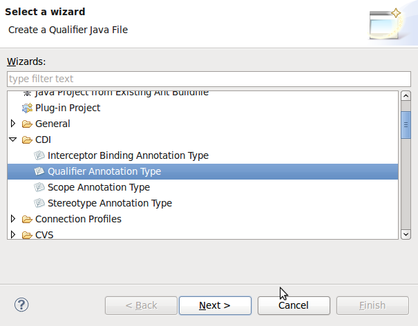
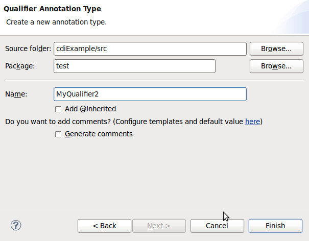
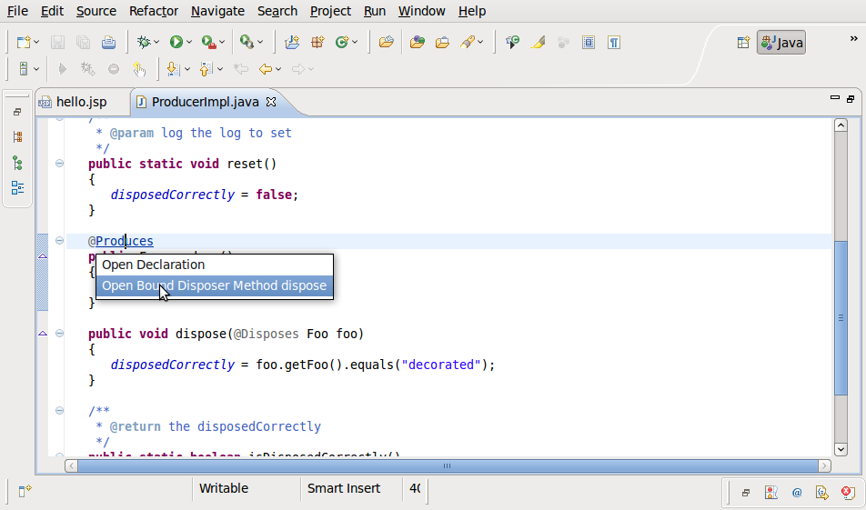
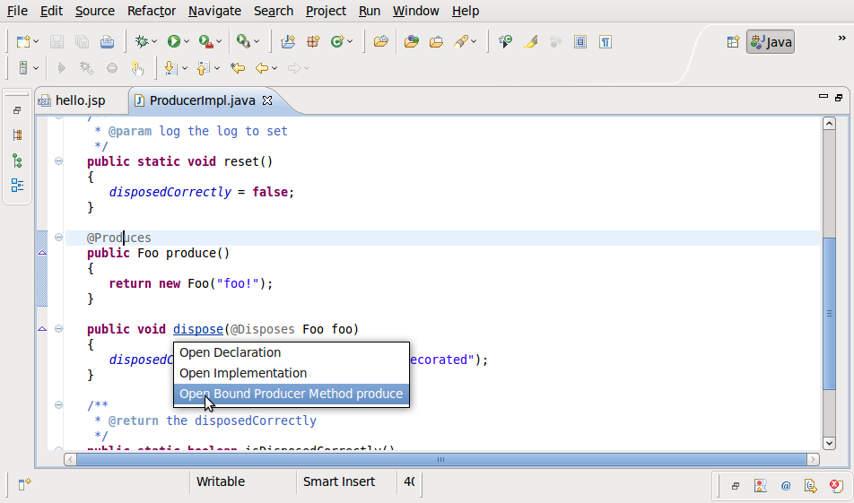

< Main Index Seam Tools News >
Wizards |
|
|
CDI Annotation Type Wizards |
There are now a handful of Wizards to easily create various CDI specific artifacts, such as Qualifier Annotation Type. Qualifier Annotation Type Wizard:  |
Hyperlinks (OpenOns) |
|
|
OpenOn for Disposer/Producer methods |
Producer and Disposer methods can now be navigate to via OpenOn.  |
Project Validation |
|
|
Validation for CDI Injection points |
CDI Injection points where there are no or ambigious matching injections will now be validated and marked with Error or Warning based on users preference. |
Refactoring |
|
|
Rename action for CDI @Named beans |
CDI @Named beans now be renamed via refactoring and shows up when using Find References for EL Expressions. Rename action is available from context menu on a @Named annotation in Java Source editor. |
|
|
|